의류기사 (2004-05-23 기출문제)
1과목: 피복재료학
1. 섬도의 표시방법 중 데니어법(denier) 표시방법은?
- 9,000m 섬유의 무게를 g로 표시한다.
- 1,000m 섬유의 무게를 Kg로 표시한다.
- 1,000m 섬유의 무게를 g로 표시한다.
- 9,000m 섬유의 무게를 pound로 표시한다.
(정답률: 알수없음)

2. 폴리노직 인견을 제조할 때 비스코스 인견의 제조원리와 다른 점이 아닌 것은?
- 원료 펄프는 중합도가 높은 것을 사용한다.
- 제조과정에서 노성과 숙성을 길게 한다.
- 방사 시 응고액의 산의 농도를 줄인다.
- 완전히 응고하기 전에 연신하여 준다.
(정답률: 알수없음)
3. 섬유내의 분자의 배향이 좋아지면 나타나는 현상을 올바르게 설명한 것은?
- 염색성이 증가한다.
- 신도가 증가한다.
- 강도가 증가한다.
- 권축이 생긴다.
(정답률: 알수없음)
4. 실켓(silket)가공과 관계있는 것은?
- chlorination
- sanforizing
- carbonization
- mercerization
(정답률: 알수없음)
5. 샌퍼라이징(Sanforizing) 가공이란?
- 방오가공
- 방축가공
- 방추가공
- 방화가공
(정답률: 알수없음)
6. 생사를 비누, 탄산소다 등으로 삶아 sericin을 제거시킨 것은?
- 관사
- 연사
- 반연사
- 평사
(정답률: 알수없음)
7. 아마섬유의 형성층을 목질부와 섬유로 분리하는 작업은?
- 탈종
- 정련
- 야적
- 제선
(정답률: 알수없음)
8. 양모섬유에서 탄화처리는 다음 중 어느 것을 제거하기 위해서 하는 것인가?
- 피브로인
- 울그리이스
- 시스틴
- 셀룰로스
(정답률: 알수없음)
9. 면섬유의 넵(nep)발생에 영향을 미치는 가장 중요한 특성은?
- 섬유장
- 섬도
- 성숙도
- 강도
(정답률: 알수없음)
10. 면사시료의 무게를 평량하였더니 136.0gr이었다. 1⑤℃에서 건조하여 항량으로 한 다음 평량하였더니 122.7gr이 되었다. 무게의 손실을 수분만이라고 한다면 이 시료의 수분율(%)은 얼마인가?
- 10.8
- 9.7
- 0.8
- 11.6
(정답률: 알수없음)
11. 가장 혼방성이 우수하여 피복재료로서 혼방 제품에 많이 사용되는 것은?
- Polyacrylonitrile
- Polyurethane
- Polyester
- Polyvinyl chloride
(정답률: 알수없음)
12. 다음 분자 구조중에서 폴리프로필렌은 어느 것인가?
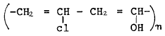
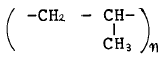
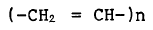
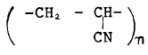
(정답률: 알수없음)
13. 다음 용어의 설명 중 맞는 것은?
- 스테이플 파이버 : 평행한 수많은 필라멘트를 모아로프상태로 만든 것이다.
- 필라멘트 토우 : 한가닥으로 된 섬유이며, 강하고 투명하며 매끈하다.
- 모노필라멘트 : 필라멘트를 짧게 잘라서 천연섬유의 혼방에 사용한다.
- 멀티필라멘트 : 여러 가닥으로 된 섬유로서 부드럽고 함기성, 흡수성, 통기성이 좋고 우아한 광택이 있다.
(정답률: 알수없음)
14. 다음 섬유 중 빨래할 때 찢어지는 것에 대해서 가장 주의 해야 할 것은?
- 면(cotton)
- 레이온(Rayon)
- 아세테이트(Acetate)
- 나일론(Nylon)
(정답률: 알수없음)
15. 기모가공의 특성이 아닌 것은?
- 보온성 증가
- 유연성 증가
- 방수성 증가
- 강도 증가
(정답률: 알수없음)
16. 모사를 염색하는 방법이 아닌 것은?
- 톱 염색(top dyeing)
- 후염(piece dyeing)
- 원모 염색(wool dyeing)
- 원사 염색(yarn dyeing)
(정답률: 알수없음)
17. 워쉬앤드웨어 가공의 성능에 주름고정과 시임퍼커링까지 고려한 가공방법은?
- 대전방지 가공
- 방연 가공
- 듀어러블프레스 가공
- 머서화 가공
(정답률: 알수없음)
18. 저밀도 직물의 특성을 설명한 것이 아닌 것은?
- 통기성이 좋다.
- 유연성이 좋다.
- 강도가 좋다.
- 드레이프성이 좋다.
(정답률: 알수없음)
19. 그림과 같은 옷감의 명칭은?
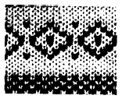
- 자카드 직물
- 인레이 직물
- 플러시 직물
- 크로스턱 직물
(정답률: 알수없음)
20. 다음중에서 능직이 아닌 것은?
- 데님
- 진
- 개버딘
- 포플린
(정답률: 알수없음)
2과목: 피복환경학
21. 보온성을 가장 높게 유지할 수 있는 인체와 의복사이의 공기층의 두께는 얼마정도인가? (단, 의복지의 통기성이 보통 정도일 때)
- 8∼10mm
- 5∼7mm
- 1∼3mm
- 0mm
(정답률: 알수없음)
22. 건강한 사람에 있어서 체온의 하루 변동폭은?
- 0.04℃
- 0.6℃
- 0.12℃
- 1.5℃
(정답률: 알수없음)
23. 햇볕에 노출시켰을 때 열선의 흡수가 가장 큰 의복재료의 색상은?
- 흰색
- 청색
- 흑색
- 적색
(정답률: 알수없음)
24. clo는 무엇의 단위인가?
- 의복의 중량
- 의복의 보온력
- 의복의 구속압
- 의복의 두께
(정답률: 알수없음)
25. 함기량을 증가시키기 위해 개발된 인조섬유로 효과가 가장 큰 것은?
- 이형단면 섬유
- 도전성 섬유
- 복합 섬유
- 중공 섬유
(정답률: 알수없음)
26. 기습(Air Humidity)을 설명한 것 중 틀린 사항은?
- 대기중에 포함된 수증기의 비를 나타낸다.
- 상대습도가 많이 사용된다.
- 한서감을 좌우한다.
- 피부에서의 땀의 증발과는 관계없다.
(정답률: 알수없음)
27. 다음은 체온조절과 발한과의 관계를 설명한 것이다. 잘못 된 것은?
- 발한은 고온의 환경하에서는 체온조절의 중요한 수단이다.
- 체열방산은 젖은 땀의 증발에 의해 촉진된다.
- 발한의 개시와 발한량은 피부온과 무관하며 심부온에 의한다.
- 혈관운동에 따른 체온조절보다 환경온이 상승하면 발한이 시작된다.
(정답률: 알수없음)
28. 하복용 옷감이 갖추어야 할 조건으로 가장 적당한 것은?
- 밀도가 조밀할 것
- 열전도성이 클 것
- 섬유의 꼬임이 적을 것
- 유연성이 클 것
(정답률: 알수없음)
29. 다음 피복 중 피부장해가 가장 많이 일어나는 것은?
- 나일론 슬립
- 레이온 팬티
- 아크릴 스웨터
- 아세테이트 블라우스
(정답률: 알수없음)
30. 환경의 온열조건에 필요한 기류(氣流)측정에 사용되는 기기와 관계가 없는 것은?
- 카타 온도계
- 풍차 풍속계
- 열선 풍속계
- 어드맨 한난계
(정답률: 알수없음)
31. 보통 성인의 전 체표면적은 어느 정도인가?
- 1.5∼1.7m2
- 1.0∼1.2m2
- 1.9∼2.1m2
- 2.3∼2.5m2
(정답률: 알수없음)
32. 의복에 의한 기후 조절상 노출 면적을 조절할 때 가장 편리한 신체 부위는?
- 두부와 신체 구간부
- 사지부와 신체 구간부
- 사지부
- 신체 구간부
(정답률: 알수없음)
33. 겨울 의복의 형태 및 착용과 관계가 없는 것은?
- 의복의 개구형태를 작게 한다.
- 신체 각 부위에 따라 보온을 다르게 한다.
- 정지공기층을 가지도록 한다.
- 피복면적을 작게 하여 준다.
(정답률: 알수없음)
34. 의복재료의 통기능에 대해 잘못 설명한 것은?
- 같은 종류의 섬유로 된 의복이라도 조직이 다르면 통기능이 다르다.
- 일반적으로 편물은 직물보다 통기능이 크다.
- 직물의 중첩매수가 증가하면 통기능은 지수곡선적으로 감소한다.
- 흡습성이 큰 섬유는 통과 공기의 습도증가에 의한 통기능의 감소가 작다.
(정답률: 알수없음)
35. 피부의 온도분포를 그래프나 사진으로 나타낼 수 있는 것은?
- 써미스터(thermistor)
- 써모커플(thermocouple)
- 써모그라프(thermograph)
- 카타 써모미터(kata thermometer)
(정답률: 알수없음)
36. 쾌적한 환경하에서 신체에서 일어나는 방열의 비율을 말한 것 중 맞는 것은?
- 복사 : 40%, 전도.대류 : 40%, 증발 : 20%
- 복사 : 20%, 전도.대류 : 40%, 증발 : 40%
- 복사 : 40%, 전도.대류 : 20%, 증발 : 40%
- 복사 : 40%, 전도.대류 : 30%, 증발 : 30%
(정답률: 알수없음)
37. 다음 중 냉감각을 가장 예민하게 느끼는 부위는?
- 발등
- 전완부
- 대퇴부
- 복부
(정답률: 알수없음)
38. 카타온도계에서 100° F 에서 95° F 까지 하강하는데 40초가 걸렸다. 카타팩터 100일 때 건카타 냉각력(millical/cm2.sec)을 구하면 얼마인가?
- 2.5
- 4.0
- 250
- 400
(정답률: 알수없음)
39. 10초 동안에 50m의 바람이 불었다면 풍속은?
- 5m/sec
- 50m/sec
- 100m/sec
- 500m/sec
(정답률: 알수없음)
40. 다음 중 기후를 형성하는 기후요소(climate elements)에 속하지 않는 것은?
- 기온
- 토질
- 기압
- 강수
(정답률: 알수없음)
3과목: 의복설계학
41. 패턴 제작을 위하여 인체에 기준점을 정한다. 견봉점은 어떤 것인가?
- 제7경추의 중앙점
- 목둘레선과 어깨솔기선이 만나는 곳의 점
- 견갑골의 견봉 외측선에서 제일 밖으로 돌출된 점
- 복사뼈의 돌출한 중앙점
(정답률: 알수없음)
42. 다음의 그림은 수직선 길이에 의한 전체길이의 착시현상을 보여준 것이다. 이들 중 키가 가장 커보이는 디자인은 어떤 것인가?
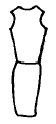
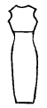
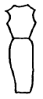
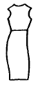
(정답률: 알수없음)
43. 다음 설명 중 맞지 않는 것은?
- 바느질 방법에서 여러번 박을수록 튼튼해서 좋다.
- 활동량이 큰 옷은 쌈솔이나 통솔 바느질이 적당하다.
- 의복의 바느질 강도에 있어서는 디자인보다 기능적인 면을 주로 고려한다.
- 바느질 방법에 따라 강도가 달라진다.
(정답률: 알수없음)
44. 얼굴과 목이 긴 경우에 잘 어울리는 네크라인은?
- 바토우 네크라인(bateau neckline)
- V 네크라인(vee neckline)
- U 네크라인(U neckline)
- 스퀘어 네크라인(square neckline)
(정답률: 알수없음)
45. 다음 무늬 중 체형을 가장 뚱뚱하게 보이게 하는 것은?
- 간격이 좁은 횡선 무늬
- 간격이 큰 종선 무늬
- 수직 수평의 큰 책크 무늬
- 작은 물방울 무늬
(정답률: 알수없음)
46. 다음 칼라의 명칭은?
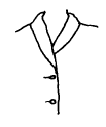
- 리플드 칼라(rippled collar)
- 더치 칼라(dutch collar)
- 롤 칼라(roll collar)
- 숄 칼라(shawl collar)
(정답률: 알수없음)
47. 목둘레선의 기본 시접 분량은 얼마 정도가 적당한가?
- 0.5cm
- 1cm
- 1.5cm
- 2cm
(정답률: 알수없음)
48. 150cm 폭의 천으로 긴소매 재킷을 만들려고 한다. 옷감의 필요량 산출법은?
- 재킷길이× 2+스커트길이+소매길이+시접(20~30cm)
- 재킷길이+스커트길이+시접(20~30cm)
- 재킷길이+스커트길이+소매길이× 2+시접(20~30cm)
- 재킷길이+스커트길이+소매길이+시접(20~30cm)
(정답률: 알수없음)
49. 150cm 폭으로 긴소매 블라우스를 만들 때 필요한 옷감의 양은? (단, 블라우스 길이 60cm, 소매 길이 50cm)
- 1⑤∼110 cm
- 120∼130 cm
- 130∼135 cm
- 140∼145 cm
(정답률: 알수없음)
50. 다음은 제도에 쓰이는 부호인데 무엇을 표시하는가?
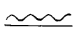
- 주름의 표시
- 늘임의 표시
- 맞춤의 표시
- 오그림의 표시
(정답률: 알수없음)
51. 무늬있는 옷감을 재단할 때 유의점 중에서 틀린 사항은?
- 위의 한장을 재단한 후에 밑의 한장의 무늬를 확인 하면서 자른다.
- 꽃 무늬인 경우에는 흥미점을 어느 것에 둘 것인가를 생각하고 자른다.
- 방향이 한쪽인 자연적 무늬인 경우는 패턴을 배치할 때 한쪽 방향으로 놓이게 한다.
- 몸판, 소매에 따라 무늬는 상관 않고 옷감의 올에 따라 패턴을 배치한다.
(정답률: 알수없음)
52. 레그 오브 머튼(leg of mutton)소매는 어떤 대비로서 디자인에 강조의 효과를 주는가?
- 재질의 대비
- 장식의 대비
- 면적의 대비
- 리듬의 대비
(정답률: 알수없음)
53. 다음 사선 무늬에서 가장 가로선(수평선)의 효과와 유사한 것은?
- 30°
- 45°
- 60°
- 75°
(정답률: 알수없음)
54. 상하가 거의 수직선에 가깝게 직선으로 내려온 스트레이트 실루엣(straight silhouette)이 아닌 것은?
- 쉬드 실루엣(sheath silhouette)
- 박시 실루엣(boxy silhouette)
- 프린세스 실루엣(princess silhouette)
- 컬럼 실루엣(column silhouette)
(정답률: 알수없음)
55. 아래 글에서 잘못된 것은?
- 유행이란 디자인의 요소가 변화한 형태이다.
- 디자인의 원리는 조형물에 따라 변한다.
- 디자인의 요소는 시대 감각에 따라 변한다.
- 디자인의 원리는 시대와 환경에 좌우되지 않는다.
(정답률: 알수없음)
56. 다음 직물 중 가장 높은 온도에서 다림질을 할 수 있는 것은?
- 마직물
- 견직물
- 아크릴
- 모직물
(정답률: 알수없음)
57. 다음의 스커어트 패턴으로 만든 스커어트는?
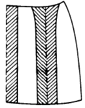
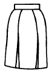
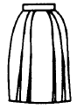
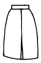
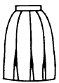
(정답률: 알수없음)
58. 다음 중 골표시로 쓰이는 것은?
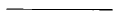
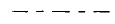
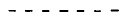
(정답률: 알수없음)
59. 폴리에스테르 옷감으로 원피스 드레스를 만들 때 허리 다아트는 어떻게 정리하는가?
- 박아서 중앙으로 꺾는다.
- 박아서 바깥쪽으로 꺾는다.
- 박아서 가른다.
- 박아서 잘라낸다.
(정답률: 알수없음)
60. 다음 그림은 Cowl Sleeve의 원형이다. drape가 아름답게 나타나게 하는 올의 방향은?
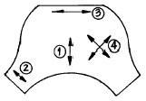
- 림
- 립
- 릿
- 링
(정답률: 알수없음)
4과목: 봉제과학
61. 심지를 부분적으로 접착하면 모(毛)가 누어져 있기 때문에 보는 방향에 따라 색상이 변한 것같이 보이는 옷감이 있다. 이러한 문제에 대한 대책에 해당되지 않는 것은?
- 심지를 전체부분에 접착한다.
- 프레스를 낮은 조건으로 맞추어본다.
- 겉감의 표면변화가 발생하지 않는 심지를 선택한다.
- 롤라 프레스기의 경우 안쪽 표면에 접착한다.
(정답률: 알수없음)
62. 면봉사의 특성중에서 해당되지 않는 것은?
- 고속 봉제성이 있고 대전에 어려움이 없다.
- 합섬사에 비해 영율이 높다.
- 낮은 신도를 가지고 있다.
- 낮은 모듈러스가 있다.
(정답률: 알수없음)
63. 다음중에서 동작연구의 목적과 가장 상관이 먼 것은?
- 동작의 필요성
- 동작의 간소화
- 동작순서의 합리화
- 동작의 여유
(정답률: 알수없음)
64. 어떤 제품의 정미 가공시간 2,310초, 가동율 76 %, 작업인원 22명, 작업시간 8시간인 경우 1일 생산량은?
- 208매
- 266매
- 281매
- 294매
(정답률: 알수없음)
65. 정확한 재단이 가능하며 적은 장수의 천에서부터 높이가 30cm까지 쌓은 천을 쉽게 재단할 수 있고 칼날이 좁고 날카롭기 때문에 예리한 각도로 쉽게 재단할 수 있는 재단기는?
- 밴드나이프형
- 유입식형
- 환도형
- 직도형
(정답률: 알수없음)
66. 천을 일정한 폭으로 접어주기 위해서 사용하는 미싱의 부속은?
- 게이지(gauge)
- 포올더(folder)
- 가이드(guide)
- 바인다(binder)
(정답률: 알수없음)
67. 아래 그림은 무슨 작업을 뜻하는가?
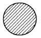
- 자동 송출
- 본봉재봉기에 의한 재봉작업
- 특종재봉기에 의한 재봉작업
- 자동 공급
(정답률: 알수없음)
68. 다음은 솔기 활탈(버러진 솔기)에 관한 설명 중 옳지 않은 것은?
- 몸에 꽉 끼는 의복
- 내구성
- 좁은 시접량
- 불균형한 스티치 장력
(정답률: 알수없음)
69. 봉제공정에서 생산성 향상을 위한 공정분석을 하기도 하는데 여기에서 가장 근본적인 목적은?
- 현재와 미래의 작업을 예측 비교한다.
- 미래의 작업을 예측해 보도록 한다.
- 현재의 작업상태를 작업활동면에서 평가하고자 한다.
- 과거의 작업상태를 현작업 활동에 맞추어 본다.
(정답률: 알수없음)
70. 부품별 레이아우트의 설명 중 틀린 것은?
- 운반은 손작업자가 롯트별 운반한다.
- 부품별로 기계를 놓아서 배치한다.
- 공정순서의 변화가 없거나 공정시간이 안정시 사용한다.
- 시작품이 많아질 가능성이 있으므로 보관설비를 충분히 배치한다.
(정답률: 알수없음)
71. 단환봉(單環捧)이란 다음 중 어느것에 해당하는가?
- 록 스티치(lock stitch)
- 체인 스티치(chain stitch)
- 컴비네이션 스티치(combination stitch)
- 더블 체인 스티치(double chain stitch)
(정답률: 알수없음)
72. 봉축율(縫縮率)이란? (단, ℓ :봉제전의 봉제선의 길이, ℓ ' :봉제후의 봉제선의 길이)
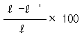
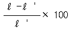
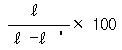
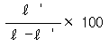
(정답률: 알수없음)
73. CAD(Computer Aided Design)장비의 기능이 아닌 것은?
- 패턴제작
- 자동재단
- 그레이딩
- 마킹
(정답률: 알수없음)
74. 생산성 향상을 위한 개선의 목표 중 해당되지 않는 것은 어느 것인가?
- 보다 편하게
- 보다 좋은 품질을
- 보다 빨리
- 보다 많은 자본을 투입해서
(정답률: 알수없음)
75. 재봉틀의 분류방법에서 박음질 방식(땀의 모양)에 따라 분류하는 것은?
- 기타분류
- 중분류
- 소분류
- 대분류
(정답률: 알수없음)
76. 동작연구에 사용되는 서브릭(Therblig) 기호중에서 다음 그림은 무엇을 뜻하는가?
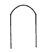
- 잡는다.
- 사용한다.
- 준비한다.
- 분배한다.
(정답률: 알수없음)
77. 다음과 같은 모양의 스티치 종류의 명칭으로 정확한 것은 어느 것인가?
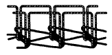
- 더블체인스티치(double chain stitch)
- 플래트시임스티치(flat seam stitch)
- 컴파운드스티치(compound stitch)
- 체인스티치(chain stitch)
(정답률: 알수없음)
78. 공업용 재봉기의 구비조건이 아닌 것은?
- 봉제목적에 적합한 강도와 박음성을 갖는다.
- 설치가 간편해 봉재장식의 재편성을 용이하게 한다.
- 생산목적에 알맞는 속도와 내구성을 갖는다.
- 숙련의 정도에 따라 그 차이가 현저해야 한다.
(정답률: 알수없음)
79. 다음중에서 본봉 재봉기의 기구 중 바늘이 천의 밑으로 내려가 있는 동안에 윗실이 다시 위로 되돌아 가지 못하게 하고, 북토리에 있는 밑실과 얽히게 하는 장치는?
- 침봉 기구
- 실채기 기구
- 피드 기구
- 북집 기구
(정답률: 알수없음)
80. 공정편성에서 S.P.T 란 무엇인가?
- 여유율
- 표준 가공시간
- 정미 가공시간
- 총 가공시간
(정답률: 알수없음)
5과목: 섬유제품시험법 및 품질관리
81. 직물의 방추도 시험방법은 ?
- T.B.L법
- 탕법
- 유니버살(Universal)법
- 팽윤막법
(정답률: 알수없음)
82. 가연전의 실의 원길이가 100㎝이고 가연사의 길이가 90㎝일 때의 꼬임 테이크 업(twist take up)은?
- 90%
- 10%
- 11.1%
- 111.1%
(정답률: 알수없음)
83. 여자용 기성복의 치수에 대한 호칭방법과 가장 상관이 없는 치수는?
- 가슴둘레
- 허리둘레
- 어깨너비
- 몸체길이
(정답률: 알수없음)
84. 양모에 화학적 처리가 가해질 때 가장 상해를 많이 받는 것은?
- 시스틴 결합
- 조염 결합
- 펩티드 결합
- 아미노기
(정답률: 알수없음)
85. 아래의 표는 A와 B섬유의 용해도 시험결과이다. 이 표로부터 감별한 A와 B는 다음 중 어떤 섬유인가?
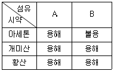
- A:면 B:양모
- A:모드아크릴 B:레이온
- A:아세테이트 B:실크
- A:아세테이트 B:나일론
(정답률: 알수없음)
86. 원면의 등급을 결정하는데 다음의 인자가 요구된다. 가장 상관이 없는 것은?
- 섬도
- 섬유장
- 성숙도
- 오염도
(정답률: 알수없음)
87. 일광견뢰도 시험방법에서 최근에 이르기까지 일광 견뢰도 측정의 기본적인 표준방법으로 이용되어 온 것은?
- 인공광 시험법
- 주광(daylight)시험법
- 태양광 시험법
- 형광 시험법
(정답률: 알수없음)
88. 섬유제품의 품질표시를 위한 섬유명칭 중 통일문자가 아닌 것은?
- 아세테이트
- 견
- 면
- 울
(정답률: 알수없음)
89. 섬유제품의 표시원칙을 나타낸 것 중 잘못된 것은?
- 성분섬유의 비율을 표시한다.
- 모든 조성 섬유명을 반드시 한글과 영어 두 종류로 표시하여야 한다.
- 잘보이는 곳에 보기 쉽게 표시한다.
- 품질을 표시할때는 제조업체의 명칭도 표시한다.
(정답률: 알수없음)
90. 섬유혼용률 시험방법으로 볼 수 없는 것은?
- 연소법
- 현미경법
- 용해법
- 기계적 분리법
(정답률: 알수없음)
91. 다음 시약 중 용해도의 차이로 나일론과 아크릴을 감별할 때 쓰일 수 있는 시약은?
- 아세톤
- 초산
- m-크실렌
- m-크레졸
(정답률: 알수없음)
92. 조류(鳥類)의 다운 제품의 품질평가 방법이 아닌 것은?
- 충전도(fillingpower)
- 산소가(Oxygen number)
- 인장강도
- 냄새
(정답률: 알수없음)
93. 영국식 면사 번수 40's (번수)를 공통식 번수(Nm)로 환산한 값은?
- 23.62Nm
- 20.00Nm
- 67.73Nm
- 80.00Nm
(정답률: 알수없음)
94. 염색견뢰도의 설명으로 가장 적합한 것은?
- 염색시 직물의 염료에 대한 염착정도를 말한다.
- 염색한 직물의 오염에 견디는 저항성을 말한다.
- 동일 농도의 염료에 대한 직물의 염착효과를 말한다.
- 외적조건에 대한 염색물의 색의 저항성을 말한다.
(정답률: 알수없음)
95. 조성섬유가 두 가지 이상으로 되어있는 섬유제품의 품질을 표시하는 경우 허용공차는?
- ± 1%
- ± 3%
- ± 5%
- ± 10%
(정답률: 알수없음)
96. 다음은 세탁방법의 하나인 charge법에 대한 설명이다. 틀린 것은?
- 드라이클리닝 용제중에 계면활성제와 함께 소량의 물을 첨가하여 사용하는 법이다.
- 친유성 오염과 친수성 오염을 함께 제거할 수 있다.
- 계면활성제의 분산력도 함께 작용하여 효과적인 세척을 할 수 있다.
- 용제중의 물은 가용화 되어있지 않으므로 물에 의해 손상받기 쉬운 섬유는 상해를 받는 결점이 있다.
(정답률: 알수없음)
97. 항장식 데니어법으로 70 D 2가닥 평행합사의 번수 표시 방법은?
- 70D/2
- 70D//2
- 2/70D
- 2//70D
(정답률: 알수없음)
98. 섬유제품의 다림질 방법에 관한 다음의 기호가 의미하는 것은?
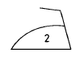
- 다리미의 온도 80∼120℃로 다림질 할 수 있다.
- 다리미의 온도 140∼160℃로 다림질할 수 있다.
- 다리미의 온도 180∼210℃로 다림질할 수 있다.
- 헝겊을 덮고 온도 180∼ 210℃로 다림질할 수 있다.
(정답률: 알수없음)
99. 다음 면섬유 중 Cuprammonium hydroxide 용액에 의해 용해되지 않는 것은?
- 정련 면
- 머어서화 면
- 수지처리 면
- 아세틸화 면
(정답률: 알수없음)
100. 다음중에서 실의 불균제도를 측정하는 방법은?
- 세리플레인(Seriplane)법
- 화이브로그라프(Fibrograph)법
- 필링(Pilling)법
- 마이크로네어(Micronare)법
(정답률: 알수없음)